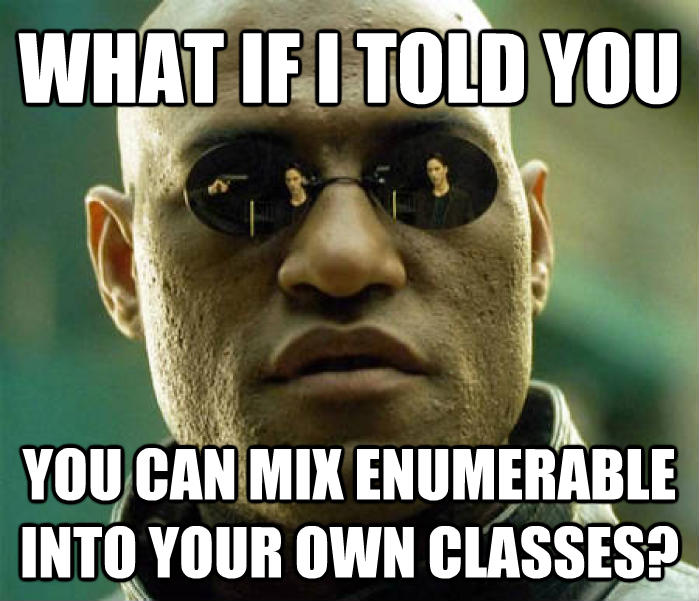

Exploring Ruby's Enumerable and Comparable
Josh W Lewis
Memphis Ruby Users Group
What is Enumerable?
{foo: bar}.is_a?(Enumerable) # => true
['foo', 'bar'].is_a?(Enumerable) # => true
Set.new(['foo', 'bar']).is_a?(Enumerable) # => true
Enumerable is designed to work with collection type objects. It's methods provide traversal and searching of members.
Enumerable is Loaded with Methods
Enumerable.instance_methods
# => [:to_a, :entries, :sort, :sort_by, :grep, :count, :find, :detect, :find_index, :find_all, :select, :reject, :collect, :map, :flat_map, :collect_concat, :inject, :reduce, :partition, :group_by, :first, :all?, :any?, :one?, :none?, :min, :max, :minmax, :min_by, :max_by, :minmax_by, :member?, :include?, :each_with_index, :reverse_each, :each_entry, :each_slice, :each_cons, :each_with_object, :zip, :take, :take_while, :drop, :drop_while, :cycle, :chunk, :slice_before, :lazy, :to_set]
We'll cover some of these...
Enumerable Methods Rely on #each
['Joffrey','Robb','Stannis','Renly','Balon'].each do |name|
puts name
end
# Joffrey
# Rob
# Stannis
# Renly
# King Balon
takes a block with an item as an argument. The implementation must be provided by class.
Enumerable#select
[-1,0,1,2,3,4].select { |i| i > 0 }
# => [1,2,3,4]
[1,2,3,4].select { |i| i.even? }
# => [2,4]
#select builds a new array of items that match selection criteria.
Enumerable#find
['hay','straw','needle','grass'].find { |i| i == 'needle' }
# => 'needle'
['one','two','three'].find{ |i| i.count > 3 }
# => 'three'
#find returns the first item that matches the selection criteria
Enumerable#map (or #collect)
['Joffrey','Robb','Stannis','Renly','Balon'].map do |name|
"King #{name}"
end
# => ['King Joffrey', 'King Robb', 'King Stannis', 'King Renly', 'King Balon']
#map builds a new array based on the block results.
Enumerable#reduce (or #inject)
[0,1,1,2,3,5].reduce { |sum, num| sum + num }
# => 12
['w','o','w',' ','h','c','u','s'].reduce do |string, letter|
letter + string
end
# => 'such wow'
#reduce passes the result of each block as an argument to the next block.
Increased Block Arity is Sometimes Useful
{"@dhh" => 108000, "@avdi" => "11700"}.each do |key, value|
puts "#{key} has #{value} followers."
end
# => @dhh has 10800 followers
# => @avdi has 11700 followers
[[12,4],[8,8],[11,5],[6,10]].select do |wins, losses|
wins.to_f / (wins + losses) > 0.5
end
# => [[12,4],[11,5]]
Use a Unary Block for Brevity
[1,2,3].any? { |num| num.odd? } # => true
[1,2,3].any?(&:odd?) # => true
['a','b','c'].none? { |s| s.empty? } # => true
['a','b','c'].none?(&:empty?) # => true

Enumerable relies on #each
class House
include Enumerable
def bannermen
['Rickard Karstark', 'Greatjon Umber', 'Howland Reed']
end
def each
bannermen.each { |bannerman| yield bannerman }
end
end
stark = House.new
stark.member? "Greatjon Umber" # => true
stark.first # => 'Rickard Karstark'
stark.count # => 3
Extend the Metaphor
class House < Liner.new(:name, :bannermen)
def name
@name ||= Faker::Name.name
end
def bannermen
@bannermen ||= Array.new(5) { Bannerman.new }
end
end
lannister = House.new(name: 'Lannister')
lannister.reduce { |sum, bannerman| sum + bannerman.health }
# => 300
lannister.any? { |bannerman| bannerman.name == 'Tywin Lannister' }
# => true
Enumerable Also Relies on #<=> (spaceship)
lannister.max #=> #<Bannerman name=Tyrion Lannister, health=20>
[3,7,2].sort # => [2,3,7]
['a','m','a','z','e'].max # => 'z'
1 <=> 2 # => -1
'bar' <=> 'foo' # => 1
'x' <=> 'x' # => 0
Now Houses are Correctly Sorted
tyrell = House.new('Tyrell')
tyrell.sort # => [#<Bannerman name="Loras Tyrell", health=95>, #<Bannerman name="Horas Redwyne", health=75>,...]
tyrell.max # => #<Bannerman name="Loras Tyrell", health=90, strength=40>
tyrell.min # => #<Bannerman name="Willas Tyrell", health=50>
Getting Crazy
class Fight < Liner.new(:bannermen)
include Enumerable
def attack
defender = living.sample
defender.health -= 1
defender
end
def living
bannermen.select{ |bannerman| bannerman.health > 0 }
end
def each
yield attack until living.count <= 1
end
end
Enumerable doesn't require you to have a collection.

Resources
- Enumerable
- ruby-doc.org/core-2.1.1/Enumerable.html
- Comparable
- ruby-doc.org/core-2.1.1/Comparable.html
- Game of Enums
- github.com/joshwlewis/game_of_enums
- This Presentation
- joshwlewis.com/slides/enumerable_comparable